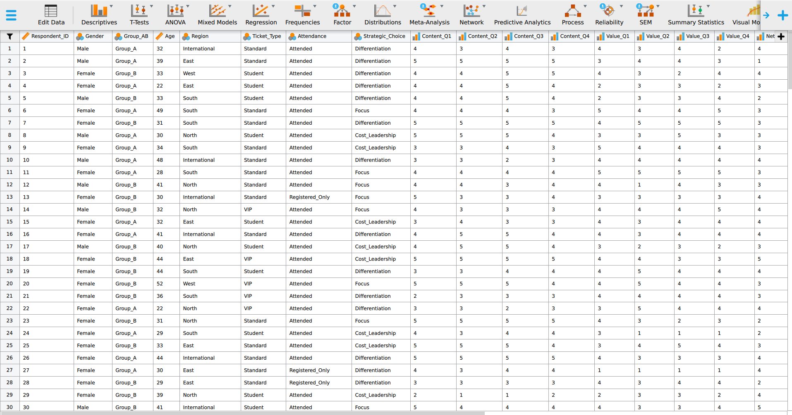
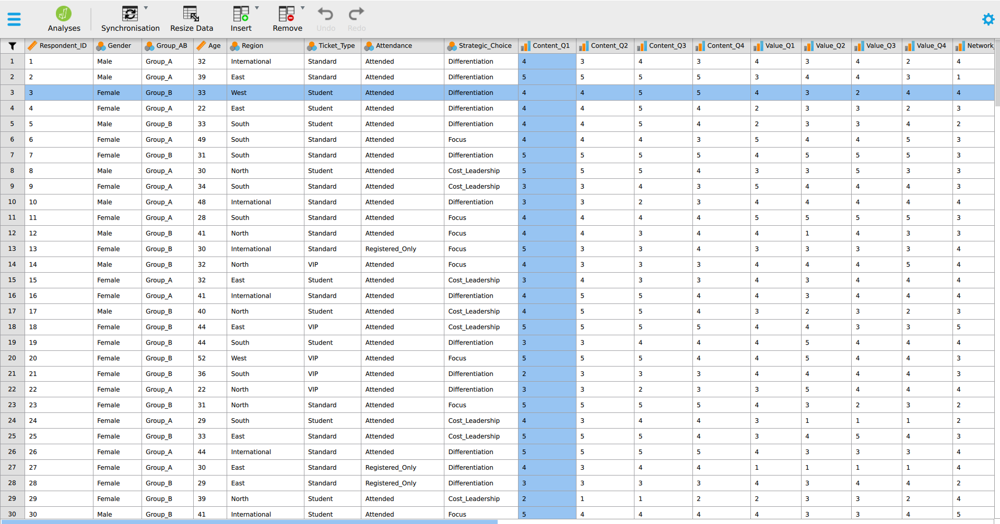

Part 1: Foundations
descriptive statistics, case and variable, population and sample, parameter and statistic, sampling, business statistics
A service manager hands you a file of 200 customer records and asks a simple question: does the service meet expectations? Before you can answer, you have to decide what kind of data you are holding, which summaries the data will support, and what the numbers leave open.
In this chapter you will use DMM_Teaching_Data_Full.csv, 200 customer records with 26 variables. Every figure quoted here comes from that file and is printed on the page, so you can follow the chapter without opening anything. You open the file yourself in the tutorial, where you will reproduce these numbers in JASP or PocketStat. The dataset overview lists every variable it holds.
This chapter’s lecture
Lecture Data, measurement scales, and descriptive statistics
Discussion
1 Welcome and weekly goals
⏱ 10 min
How the module is organised, and why data types and descriptive statistics come before any management decision.
Acquisition
2 Core concepts
⏱ 30 min
How data, variables, and measurement scales connect to frequency tables, measures of centre, and measures of spread.
Practice
3 Worked example and discussion
⏱ 15 min
Interpreting a short set of descriptive outputs, and saying what a manager can and cannot infer from them.
Assessment
4 Exit check
⏱ 5 min
A short check on variable type and the most suitable descriptive summary.
Learning objectives
After studying this chapter you should be able to:
- Explain why a manager describes evidence before acting on it.
- Distinguish a case, a variable, an observation, and a value in a real dataset.
- Separate a population from a sample, and a parameter from a statistic.
- Say what descriptive statistics can establish and what only inference can.
- Classify a variable as nominal, ordinal, interval, or ratio, and as discrete or continuous.
- Identify which variable is independent and which is dependent in a stated question.
- Build and read frequency, relative frequency, and grouped and cumulative frequency tables.
- Choose a graph that suits the variable type and the question.
- Calculate and interpret the mean, median, mode, range, variance, standard deviation, quartiles, and the interquartile range.
- Recognise a misleading summary or display and say why it misleads.
This week’s learning plan is 9 hours: 1 hour of synchronous lecture, 2 hours of synchronous tutorial, and 6 hours of asynchronous self-study.
You must read all four parts of this chapter word by word before moving to the tutorial. You are permitted to use Google NotebookLM to brainstorm the theories, but you must complete the “Worked Examples” and the “Try It” exercises independently, without any AI assistance. The full policy, and the reason NotebookLM is the only tool permitted, is on the Using AI on This Module page.
You should also understand the key terms and how the statistical techniques apply to managerial decision-making, because the tutorial opens by loading the data and running the analysis.
If you are a fast reader and finish this chapter before the planned timing, continue to the recommended readings in the independent study section. Complete the independent study and submit your weekly progress.
Statistics as a decision language
You may have wondered where statistics will be used once you are managing something. The answer is that you will be handed a set of resources including strategies, goals, KPIs, and numbers by other people, and you will have to decide whether to act on them.
A regional manager sends you a spreadsheet showing that complaints rose 40 per cent last quarter. A supplier tells you their delivery time averages two days. A colleague reports that customers in the North are happier than customers in the South. In each case somebody has already done the arithmetic, and in each case the arithmetic is the easy half. The greater challenge is determining what conclusions the data can support.
Often managers decide with incomplete information. Read these two examples carefully. If a restaurant manager wants to change his opening hours, he must first study daily sales and the busy hours. If a hospital administrator wants to decide the gap between appointment slots, she must first study the current waiting times, and she must also decide from that data whether the schedule needs changing at all. In both cases the first task is to describe the evidence clearly.
Statistics is a language for reasoning. A number on its own settles nothing. A number with its units, its spread, its source and its limits, together with the right statistical technique, can help a manager decide.
Consider the difference between these two sentences about the same file.
Average waiting time is 45 minutes.
Across 200 customers surveyed at one branch in one month, 104 waited 46 minutes or less, a further 77 waited between 47 minutes and an hour, and 19 waited over an hour.
The first statement requires only basic calculation. The second tells a manager where the problem is, how many people it affects, and how far the claim reaches. Each sentence is accurate. Only the second is useful. You will learn to write that kind of sentence by the end of this week.
Where judgement takes over
You should know where the boundary sits between analysis and interpretation before you start, because producing statistics is easy. Any statistical software will do it, and so will a calculator. What matters is how you interpret the result and what you decide from it.
Statistics tells you what changed. For example: waiting time fell by four minutes. Whether four minutes justifies another staff member is your judgement, and the analysis leaves it with you.
Statistics also answers the question you ask, so framing the question is your work. Ask “what is the average wait” and you learn the average. Ask “how many customers waited longer than we promised” and you learn something a manager can act on. The software processes either question with equal efficiency and applies no judgement about which one mattered.
Observation can show association. It cannot show cause. The manager must decide whether a causal claim is justified. Two things that move together may share a cause, may be connected the other way round, or may be coincidence. You will study this in chapter 9 with correlation and chapter 11 with regression. For now the focus stays on data types, measurement scales and descriptive statistics.
The problem with intuition
Managers have extensive experience, yet experience is a poor guide to frequency. Two cognitive biases cause most of the damage.
Availability. Events that come to mind easily feel more common than they are. Handle one furious complaint and you will overestimate how many customers are furious, because that customer is vivid and the other 199 are quiet.
Confirmation. You weigh evidence that fits what you already believe more heavily than evidence that unsettles it. Convinced the evening shift is the problem, you will notice every evening failure and explain away the morning ones.
Descriptive statistics works as a check on both. It forces every case into the count, including the ones that sit awkwardly with the story, and this chapter covers it in detail.
Datum, data, information, and evidence
In this section you will learn the difference between a datum, data, information and evidence. Even though these four words are used loosely in everyday speech, they carry different weight in a report, so you should use the appropriate one when needed.
Data are recorded values: 47, "East", 3.8. A single value is a datum. On their own they mean nothing, because nothing tells you what was measured or on whom.
Information is data organised so a question can be asked of it. A table of complaints by region is information. So is a mean waiting time, or a count of how many customers held each ticket type.
Evidence is information brought to bear on a decision, with its limits stated. “Half of customers waited 46 minutes or less and 19 of 200 waited over an hour, and this is one month of data from one branch” is evidence, because a manager can act on it and can also see how far it reaches.
You will spend this module learning to move from the datum to the evidence. Most weak reports stop at the information stage and present it as though the limits had been considered. Worked example 1.1 sets out the four in a single case.
Worked example 1.1
From datum to evidence
The value 61 appears in the waiting time column of the teaching dataset, in row 5.
Carry that single value through to something a manager can act on. At which point does it become data, then information, then evidence?
On its own, 61 is a datum. It could be an age, a price, a score, or a room number.
Placed in its column, it becomes part of the data: respondent 5 waited 61 minutes.
Counted alongside the other 199 rows, it becomes information: 19 of 200 customers waited more than 60 minutes.
Stated with its limits and its consequence, it becomes evidence: “Just under one customer in ten waited more than an hour. These are one month’s customers at a single branch, so the figure describes this branch. The business as a whole is a separate question, and this file cannot reach it. The long waits are where a service-standard breach would show first.”
Mean, median, mode, and proportion
Four terms appear on almost every page from here on: the mean, the median, the mode, and a proportion. Each gets a full section later in this chapter. You need to recognise all four now, because the next few pages use them before those sections arrive.
The mean is one number standing in for a whole set: add every value and divide by how many there are.
The median is the middle value once the data are in order.
The mode is the value that occurs most often.
A proportion is a share of the whole: a count divided by the total. It sits between 0 and 1, and multiplying it by 100 turns it into a percentage.
For example: if you sat three tests and scored 86, 75, and 92, your mean score is the three scores added together and divided by three.
\[\bar{x} = \frac{86 + 75 + 92}{3} = \frac{253}{3} = 84.3\]
Your median score is the middle one once they are in order, 75, 86, 92, so the median is 86. No score occurs twice, so this set has no mode. And if 22 of the 40 students in your class are women, the proportion of women is \(22 \div 40 = 0.55\), or 55 per cent.
Is an average the same as a mean?
A fifth word, average, is used loosely in everyday speech, and it needs a precise definition before it causes confusion.
In conversation, “average” and “mean” are interchangeable, and most people who say one intend the other. In statistics teaching the word is used more broadly, as the umbrella term for any measure of the centre, so the mean, the median and the mode are together called the three averages. Technically, an average is a location at the centre of the data.
No authority settles which use is correct. For a manager, that ambiguity is the practical problem. When a report hands you “the average”, the word alone leaves you guessing which of the three produced it. Read on and find out.
A supplier quoting an average delivery time of two days has told you less than the wording suggests, because a mean of two days and a median of two days describe different businesses.
Cases, variables, observations, and values
A case is the unit the data describe. In DMM_Teaching_Data_Full.csv each row is one respondent, so the respondent is the case. Cases are also called units, subjects, or records, and the word changes with the field while the meaning holds.
A variable is a characteristic measured on every case. Age, Region and Satisfaction are variables, and each has its own column.
An observation is the complete set of values recorded for one case, which is one whole row. A value is a single entry, one cell.
| Term | In this dataset |
|---|---|
| Case | One respondent, one row, 200 in total |
| Variable | Age, Gender, Region, Satisfaction, Waiting_Time_Mins, 26 in total |
| Observation | All 26 values recorded for respondent 1 |
| Value | 32, or East, or 3.72 |
Here is the first row of the file, written out as an observation:
| Variable | Value |
|---|---|
Respondent_ID |
1 |
Gender |
Male |
Group_AB |
Group_A |
Age |
32 |
Region |
International |
Ticket_Type |
Standard |
Attendance |
Attended |
Strategic_Choice |
Differentiation |
Eight of the 26 values are shown. Read across and you have one customer. Read down a single column across all 200 rows and you have one variable.
Below is the same file as the software shows it, and the tutorial opens on this screen.


A case runs left to right. A variable runs top to bottom. Every cell where the two cross is one value.
Establish these distinctions now, because almost every mistake you will make later starts with confusing a variable for a case, or a value for a variable.
Worked example 1.2
Identifying cases and variables
A clinic records, for each patient seen in March: patient number, age, presenting complaint, minutes waited, and whether they were referred onward.
Name the case and the variables. State what the observation for patient 12 is, and what the value 28 in the waiting column is. Then decide what “March” is.
The case is the patient. The variables are age, presenting complaint, minutes waited, and referral. The observation for patient 12 is the full row of five values. The value 28 in the waiting column is one entry.
“March” describes the whole dataset. Every case shares it, so it separates nothing within the data, which makes it a constant. A constant carries no information about differences between cases, so it fails the test for a variable. It still belongs in the description of where the data came from.
A university records, for each module taught this semester: module code, credits, number enrolled, mean assessment mark, and whether it ran online.
State the case, list the variables, and say what the value 142 in the enrolment column represents.
The case is the module. The variables are module code, credits, number enrolled, mean assessment mark, and whether it ran online. The value 142 is one value of the enrolment variable, recording that this particular module had 142 students.
142 is one value of one variable, recorded for one case, occupying a single cell.
“Mean assessment mark” is a variable here even though it is itself an average. It was calculated on students, and at this level of the data it is recorded once per module, so it behaves like any other measurement of a module.
Population, sample, parameter, and statistic
A population is every case you want to say something about. A sample is the subset you measured.
Sampling is a practical necessity. Measuring every customer of a national chain would cost more than the decision is worth, and would take long enough that the answer would be out of date on arrival. A well-drawn sample of 200 answers the question this week.
A number describing a population is a parameter. A number describing a sample is a statistic. A statistic carries uncertainty and a parameter does not. Chapters 4 onward exist to handle that uncertainty.
Notation keeps the two apart. Learn it now, because chapter 4 assumes it. Greek letters describe populations. Latin letters describe samples.
| Quantity | Population parameter | Sample statistic |
|---|---|---|
| Mean | \(\mu\) | \(\bar{x}\) |
| Proportion | \(\pi\) | \(p\) |
| Size | \(N\) | \(n\) |
Spread has its own symbols, and they arrive in Measures of spread alongside the measures they stand for.
When you read \(\bar{x} = 45.46\) in a report, the bar is telling you this came from a sample and carries uncertainty. When you read \(\mu = 45.46\), somebody is claiming to have measured everybody. The second claim is rare and should always be checked.
Worked example 1.3
Population and sample
A regional manager oversees 40 branches. She surveys customers at 6 of them and calculates a mean satisfaction of 3.8.
Name the population, the sample, the statistic, and the parameter. Then write the sentence she should publish.
The population is customers of all 40 branches. The sample is customers of the 6. The mean satisfaction she calculates is a statistic, and its symbol is \(\bar{x}\). The mean satisfaction across all 40 branches, which she does not know, is the parameter \(\mu\).
Reporting the figure as “customer satisfaction is 3.8” promotes a statistic to a parameter. The accurate version names the sample:
Mean satisfaction among customers surveyed at 6 of our 40 branches was 3.8.
The difference is one clause, and that clause tells a reader how much weight the number will bear.
A hospital measures waiting time for 150 of the 2,400 patients seen in a quarter and reports a median of 31 minutes.
Identify the population, the sample, and whether 31 is a parameter or a statistic. Then write the one sentence you would add to the report to make it accurate.
The population is all 2,400 patients seen in the quarter. The sample is the 150 measured. The median of 31 minutes is a statistic, because it describes the sample.
An accurate sentence would be: “Median waiting time among 150 patients sampled from the 2,400 seen this quarter was 31 minutes.” The original sentence implies the figure describes everyone.
Describing and inferring
Describing and inferring are two different claims, and the rest of this module is built on keeping them apart. In practice they are blurred more often than any other pair.
Descriptive statistics summarises the data you have. If you hold every case in the population, a descriptive summary is a fact. Every figure is exact, and the work is finished.
Inferential statistics uses a sample to say something about a population you did not measure. That step introduces uncertainty, and it requires different tools and different caveats.
“We found this in our data” and “this is probably true more broadly” are two different claims, and reports frequently cross from the first to the second without explicit justification.
Each has its place, and the error is doing the second while claiming the first.
Three errors at the boundary
Treating a sample summary as a population fact. “Satisfaction is 3.8” when 3.8 came from 6 branches out of 40.
Using inference where description is enough. Hold all 40 branches and you can read off which has the longest waits. A significance test on a full population answers a question already settled.
Generalising from a convenient sample. Customers who answer a survey differ systematically from those who stay silent. The sample is real, and the population it represents is narrower than it looks, usually narrower than the report claims.
Chapter 4 builds the tools for defensible inference. Here you are learning to describe well, and to mark the sentence where description ends and inference begins.
For each sentence, say whether it describes the data held or infers beyond it.
- “Of the 200 customers surveyed, 124 held standard tickets.”
- “Most of our customers hold standard tickets.”
- “The mean waiting time in this file is 45.5 minutes.”
- “Customers typically wait about 45 minutes at this branch.”
- “Waiting times at our branches average 45 minutes.”
- Describing. It states a count in the data held and stops there.
- Inferring. “Our customers” reaches past the 200 surveyed to everyone.
- Describing. It names the file.
- Inferring, mildly. “Typically” generalises to customers of this branch who were not surveyed. This one is usually defensible, and it still needs the sample named.
- Inferring, strongly. “Our branches” reaches to branches where no data was collected at all. This is the claim that needs the most support and usually gets the least.
Sentences 2, 4 and 5 are legitimate claims. They are claims the sample has to earn, and the accurate version of each names the sample it rests on.
Sampling and representativeness
A sample is useful only if it resembles the population in the ways that matter. How the sample was drawn decides that, and the decision is made before any analysis begins.
| Sampling approach | What it is | The risk |
|---|---|---|
| Simple random | Every case has an equal chance of selection | Needs a full list of the population |
| Systematic | Every \(k\)th case from an ordered list | A hidden cycle in the order distorts it |
| Stratified | Random within defined groups, then combined | Needs the groups known in advance |
| Cluster | Whole groups selected at random, then all cases within them | Cheaper, and less precise for the same size |
| Convenience | Whoever is easiest to reach | Rarely represents anyone but itself |
Convenience sampling is perfectly acceptable. It is the usual default in a teaching exercise and in much practice. What is forbidden is reporting it as though it were random.
Two additional problems arise even when the method was sound.
Sampling error is the difference between a sample statistic and the population parameter that arises purely because you measured a sample. Measure every case and it disappears. It shrinks as the sample grows and it never reaches zero. It is expected, it is quantifiable, and chapters 4 onward are largely about quantifying it.
Non-sampling error is everything else: a badly worded question, a data entry slip, a respondent who answers what they think you want to hear. It does not shrink as the sample grows. A larger sample of a biased measurement gives you a more precise estimate of the wrong quantity.
Worked example 1.4
Two samples, same size, different worth
A manager wants to know how long customers wait. She has budget to measure 200 of them, and two ways to spend it.
Approach A. Measure the first 200 customers through the door on a Monday morning.
Approach B. Measure 40 customers on each of five days chosen across the month, drawn at random from that day’s arrivals.
Both give \(n = 200\). Which is worth more, and what exactly does the weaker one cost her?
Approach B is worth more, and the reason sits in what each sample is allowed to represent.
Approach A confounds waiting time with Monday morning, which is a specific and probably atypical part of the week. Whatever she measures describes Monday mornings, and her question was about customers. Approach B spreads the sample across the variation it is trying to measure, so the 200 cases stand for the month.
The sampling error is similar in both, because that depends mostly on the sample size. The bias is entirely different, and no amount of arithmetic afterwards repairs it. That is the cost: Approach A buys a precise answer to a question she did not ask.
Variation in data
Values differ from case to case, and you will be managing that variation.
If every customer waited exactly 45 minutes, the mean would tell you everything and you could stop reading here. Waits differ. In the teaching dataset they run from 12 minutes to 90, and description has to convey that range faithfully in a few numbers.
Variation also explains why one observation should rarely drive policy. One angry customer, one late shipment, one exceptional sales day may reveal a genuine problem, or may be an unusual case. Descriptive statistics help you judge which.
Worked example 1.5
Variation and decision risk
Two delivery routes both average 42 minutes. Route A ranges from 38 to 47 minutes. Route B ranges from 12 to 95. The promise made to the customer is delivery within the hour.
On the average alone the two routes look identical. Are they performing equally?
No. The average obscures this variation.
A customer on Route A can expect something close to 42 minutes every time. A customer on Route B faces a wait that could be a quarter of the average or more than double it. Against the promise of an hour, Route A keeps it almost always and Route B fails roughly a quarter of the time.
Reporting only the mean obscures the underlying issue. This is a frequent reporting failure in management, and most of what follows is a set of tools for avoiding it.
Section summary
A case is the unit the data describe. A variable is a characteristic measured on it. A sample holds the cases you measured, and a population holds every case you want to talk about. The gap between them is uncertainty, and naming it is the difference between description and inference. Variation is the risk a manager carries, and reporting it is part of reporting performance.